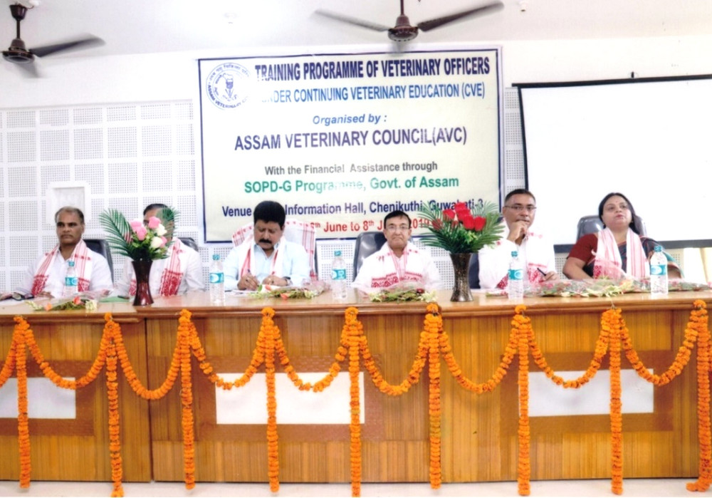
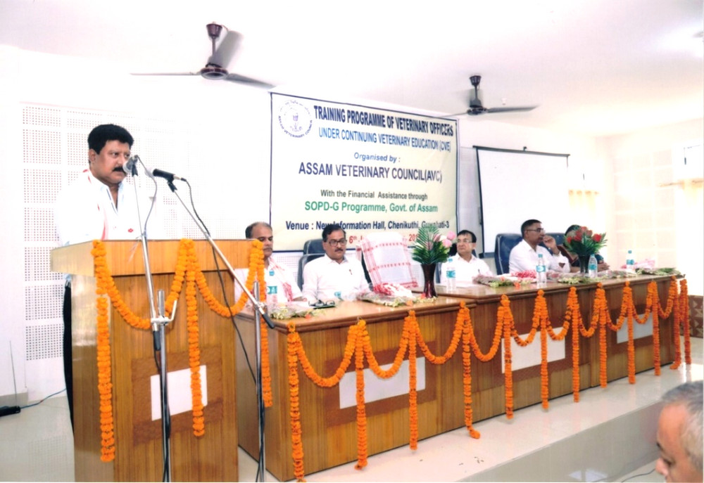
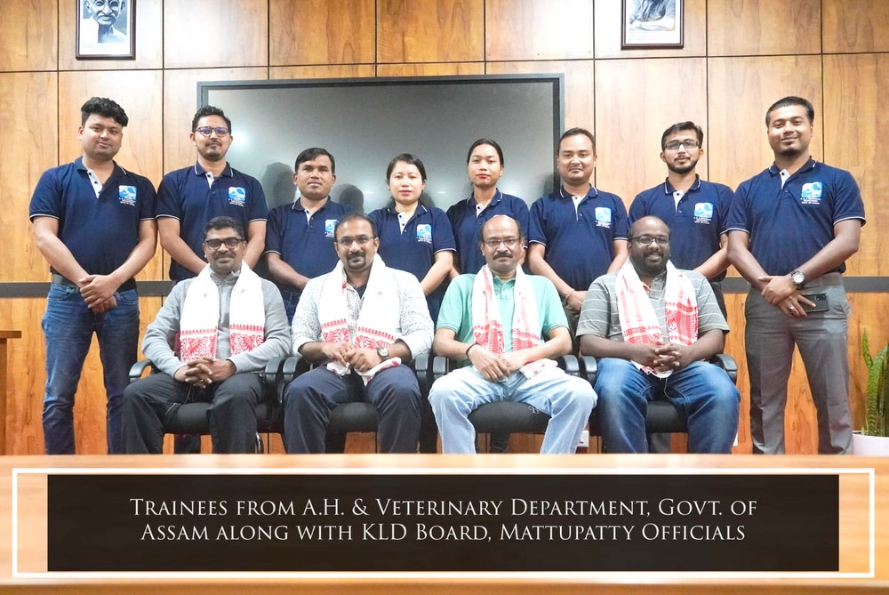
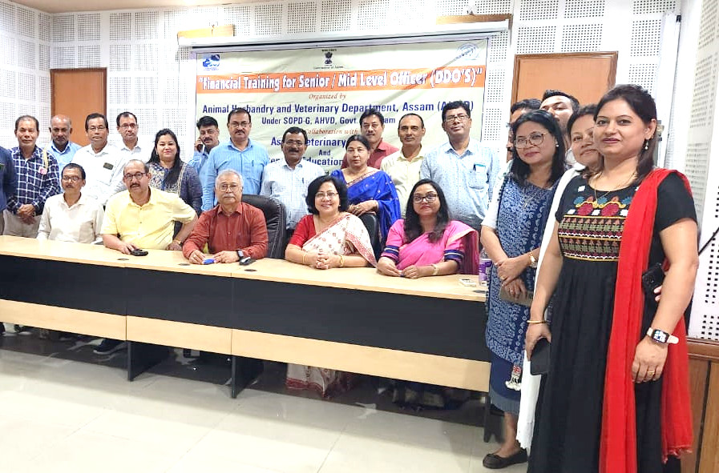
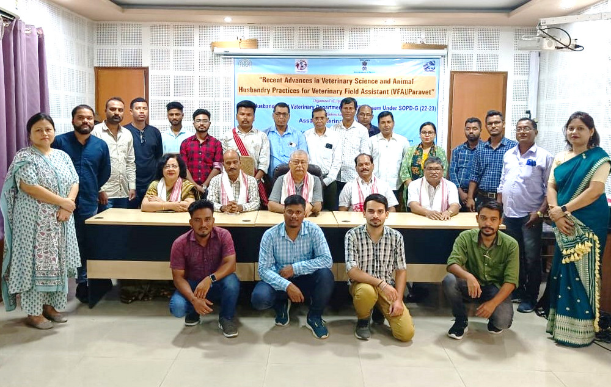
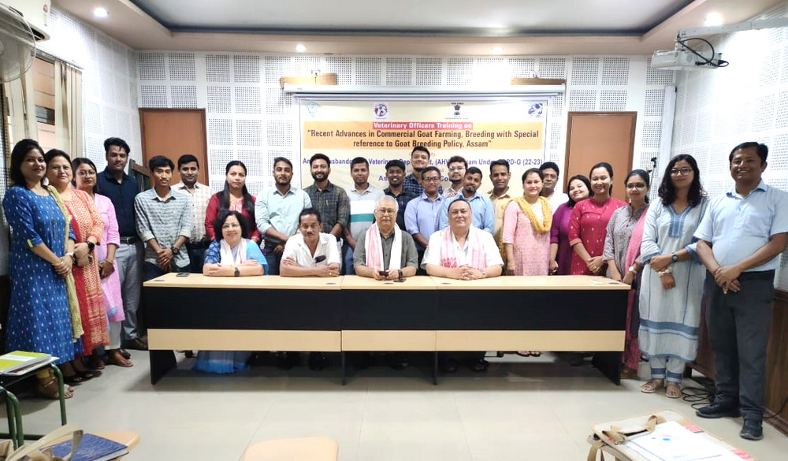
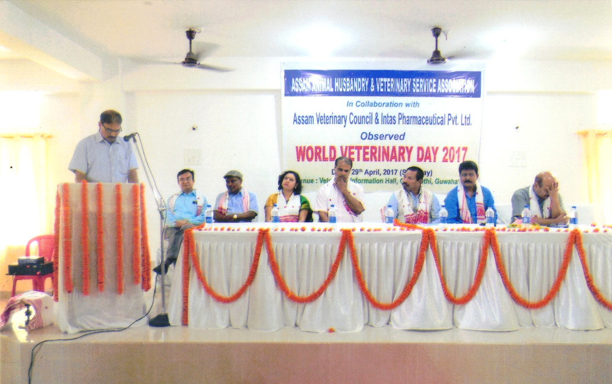
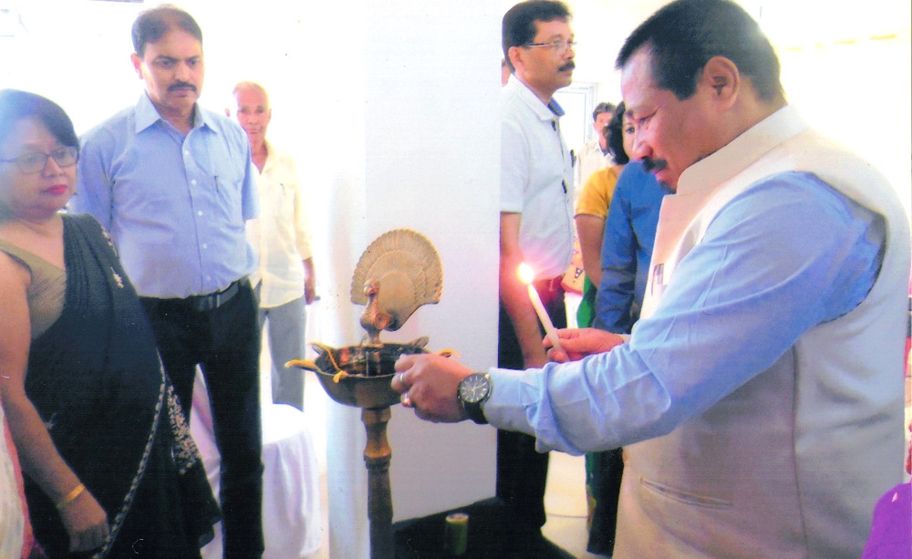
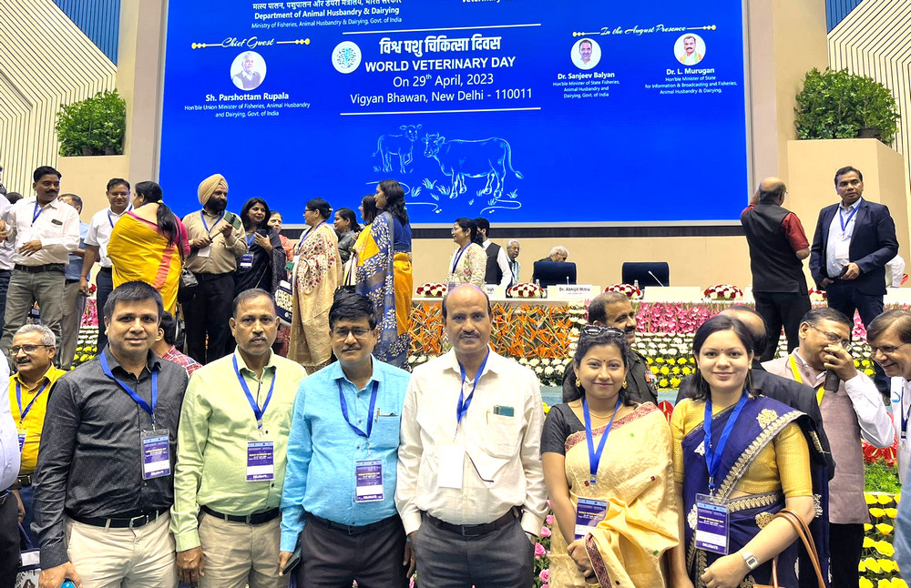
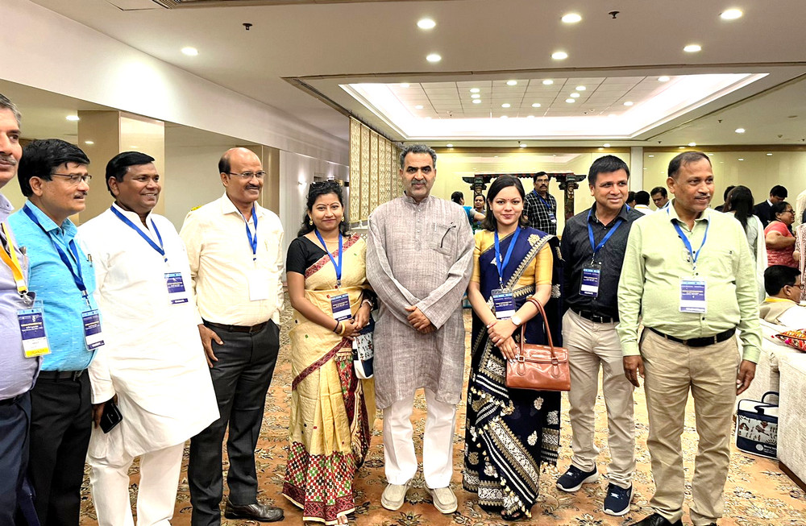

Snapshots of Activities

Training Programme of Veterinary Officers

Training Programme of Veterinary Officers

Training of Fertility Problem in Female Bovine

Financial Training for Senior/Mid-Level Officer (DDO's)

Three days Training on Recent advances in Veterinary Science and Animal Husbandry Practices

Training on Recent advances in Commercial Goat Farming, breeding with special reference to Goat Breeding Policy, Assam

World Veterinary Day held on 29th April 2017 at Veterinary Information Hall, Chaenikuthi, Guwahati

World Veterinary Day held on 29th April 2017 at Veterinary Information Hall, Chenikuthi, Guwahati

World Veterinary Day held on 29th April 2023 at Vigyan Bhawan, New Delhi

World Veterinary Day held on 29th April 2023 at Vigyan Bhawan, New Delhi